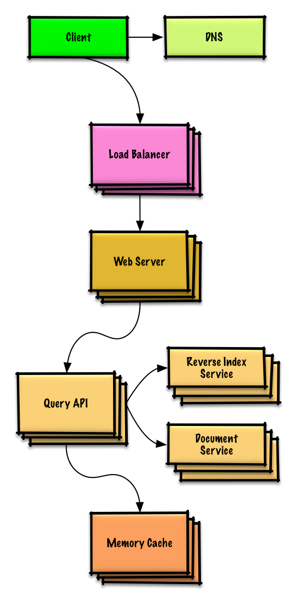
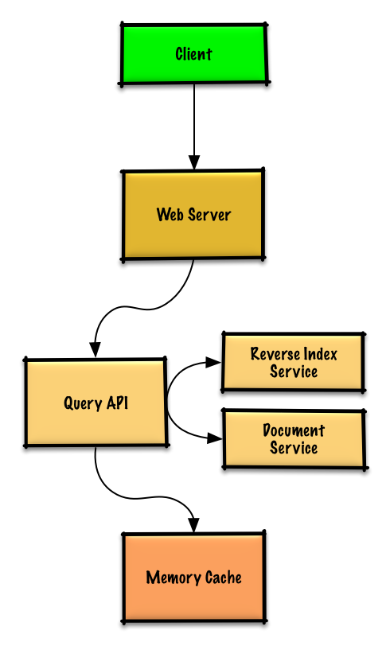

MODULE 14 · SYSTEM DESIGN SOLUTION
Solution to the exercise: "Design a key-value store for a search engine" (query result cache)
A focused, smaller cousin of the web crawler problem: given a search engine already exists, cache its most recent/popular query results so repeat searches don't have to hit the index every time.

Popular queries get served from a Memory Cache (Redis/Memcached) instead of hitting the Reverse Index and Document services every time — memory reads run ~250μs vs. 4x on SSD, 80x on disk, which is the entire reason this cache is worth building. Since capacity is limited, evict with LRU (least recently used).
The cache itself is a classic LRU structure: a doubly-linked list (new entries at the head, expired entries removed from the tail) plus a hash table for O(1) lookup into the list.
# -*- coding: utf-8 -*-
class QueryApi(object):
def __init__(self, memory_cache, reverse_index_cluster):
self.memory_cache = memory_cache
self.reverse_index_cluster = reverse_index_cluster
def parse_query(self, query):
"""Remove markup, break text into terms, deal with typos,
normalize capitalization, convert to use boolean operations.
"""
...
def process_query(self, query):
query = self.parse_query(query)
results = self.memory_cache.get(query)
if results is None:
results = self.reverse_index_cluster.process_search(query)
self.memory_cache.set(query, results)
return results
class Node(object):
def __init__(self, query, results):
self.query = query
self.results = results
class LinkedList(object):
def __init__(self):
self.head = None
self.tail = None
def move_to_front(self, node):
...
def append_to_front(self, node):
...
def remove_from_tail(self):
...
class Cache(object):
def __init__(self, MAX_SIZE):
self.MAX_SIZE = MAX_SIZE
self.size = 0
self.lookup = {}
self.linked_list = LinkedList()
def get(self, query):
"""Get the stored query result from the cache.
Accessing a node updates its position to the front of the LRU list.
"""
node = self.lookup[query]
if node is None:
return None
self.linked_list.move_to_front(node)
return node.results
def set(self, results, query):
"""Set the result for the given query key in the cache.
When updating an entry, updates its position to the front of the LRU list.
If the entry is new and the cache is at capacity, removes the oldest entry
before the new entry is added.
"""
node = self.map[query]
if node is not None:
# Key exists in cache, update the value
node.results = results
self.linked_list.move_to_front(node)
else:
# Key does not exist in cache
if self.size == self.MAX_SIZE:
# Remove the oldest entry from the linked list and lookup
self.lookup.pop(self.linked_list.tail.query, None)
self.linked_list.remove_from_tail()
else:
self.size += 1
# Add the new key and value
new_node = Node(results)
self.linked_list.append_to_front(new_node)
self.lookup[query] = new_nodeNote: this is the same LRU shape you'll build from scratch in Module 15's LRU Cache object-oriented design exercise — worth noticing the pattern repeats.
A cached entry goes stale when the underlying page's contents change, the page is added/removed, or its rank changes. The simplest fix: give every entry a time-to-live (TTL) and refresh on expiry. This whole approach — check cache, fall back to the source, populate cache — is exactly Module 08's cache-aside pattern.

The core scaling question here is how the Memory Cache cluster holds its data across many machines — three real options:
machine = hash(query) — more moving parts, but the best use of memory and the best hit rate; in practice you'd want consistent hashing here so adding/removing cache machines doesn't reshuffle everythingNext in Module 14: Amazon sales rank. Previous: Social graph.